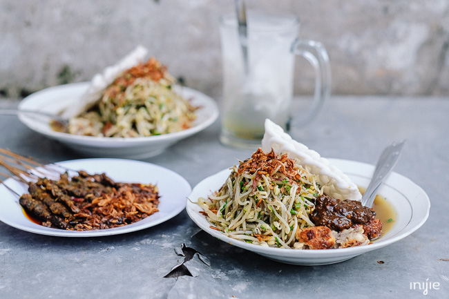

Lontong balap juga menjadi salah satu kuliner Surabaya yang khas dan legendaris.dari kita mungkin akan menemukan banyak tempat makan Lontong Balap, tetapi yang paling legendaris adalah Lontong Balap Garuda Pak Gendut di Jalan Kranggan.
Tempat makan ini sudah ada sejak 1958 dan masih menjadi pilihan banyak warga lokal dan wisawatan saat berkunjung Surabaya.
Beberapa pelanggannya menyebut, rasa makanan di warung ini masih sangat terjaga hingga saat ini.
Padahal, makanan khas Surabaya ini sudah berdiri lebih dari empat dekade.
Alamat : Jalan Kranggan no. 60, Sawahan, Surabaya (depan bekas Bioskop Garuda)